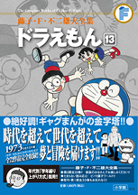

| |

定価1,890円（税込）
A5判／696ページ
好評発売中！
★は初めて単行本に収録される
作品です。
※収録内容は変更になる
場合があります。

|
あめんぼう（小学一年生1980年4月号）
すぐやるガン（小学一年生1980年5月号）
ロボット服（小学一年生1980年6月号）
どんぶらガス（小学一年生1980年7月号）
本物げんとう機（小学一年生1980年8月号）
海水コントローラー（小学一年生1980年9月号）
持ちぬしシール（小学一年生1980年10月号）
とりかえミラー（小学一年生1980年11月号）
うちでのデパート（小学一年生1980年12月号）
ラジコンテレビ（小学一年生1981年1月号）
ゆきぐもベース（小学一年生1981年2月号）
おみやげフロシキ（小学一年生1981年3月号）
★そっくりかかし（小学二年生1981年4月号）
時計はタマゴからかえる（小学二年生1981年5月号）
おもかるとう（小学二年生1981年6月号）
空中フック（小学二年生1981年7月号）
のび太シンデレラ（小学二年生1981年8月号）
なんでも空港（小学二年生1981年9月号）
ひょう本さいしゅう箱（小学二年生1981年10月号）
アニメスプレー（小学二年生1981年11月号）
ターザンパンツ（小学二年生1981年12月号）
自動ぶんなぐりガス（小学二年生1982年1月号）
実物ベニヤ（小学二年生1982年2月号）
代用シール（小学二年生1982年3月号）
人間ブックカバー（小学三年生1982年4月号）
機械化機（小学三年生1982年5月号）
鏡の中の世界（小学三年生1982年6月号）
サンタイン（小学三年生1982年7月号）
広〜い宇宙で海水浴（小学三年生1982年8月号）
大ピンチ！スネ夫の答案（小学三年生1982年9月号）
石器時代のホテル（小学三年生1982年10月号）
しんじゅ製造アコヤケース
（小学三年生1982年11月号）
バリヤーポイント（小学三年生1982年12月号）
実物ミニチュア大百科（小学三年生1983年1月号）
クロマキーでノビちゃんマン
（小学三年生1983年2月号）
のび太のへそくりが消えた！？
（小学三年生1983年3月号）
のび太 神さまになる（小学四年生1983年4月号）
|
ロビンソンクルーソーセット
（小学四年生1983年5月号）
へやこうかんスイッチ（小学四年生1983年6月号）
モーゼステッキ（小学四年生1983年7月号）
海坊主がつれた！（小学四年生1983年8月号）
お子さまハンググライダー
（小学四年生1983年9月号）
台風トラップと風蔵庫（小学四年生1983年10月号）
カワイソメダル（小学四年生1983年11月号）
ひるねは天国で（小学四年生1983年12月号）
ま夜中に山びこ山が！（小学四年生1984年1月号）
酒の泳ぐ川（小学四年生1984年2月号）
ロボット背後霊（小学四年生1984年3月号）
ガッコー仮面登場（小学五年生1984年4月号）
★なんでも割引券（小学五年生1984年5月号）
ムリヤリキャッシュカード
（小学五年生1984年6月号）
大予言・地球の滅びる日（小学五年生1984年7月号）
アドベン茶で大冒険（小学五年生1984年8月号）
ドラえもんに休日を！！（小学五年生1984年9月号）
ジャイアン反省・のび太はめいわく
（小学五年生1984年10月号）
自信ぐらつ機（小学五年生1984年11月号）
ツモリナール（小学五年生1984年12月号）
ドリームプレイヤー（小学五年生1985年1月号）
ジャストホンネ（小学五年生1985年2月号）
★暴力エネルギー探知機（小学五年生1985年3月号）
レポーターロボット（小学六年生1985年4月号）
強〜いイシ（小学六年生1985年5月号）
みえないボディガード（小学六年生1985年6月号）
男女入れかえ物語（小学六年生1985年7月号）
大人気！クリスチーネ先生
（小学六年生1985年8月号）
45年後……（小学六年生1985年9月号）
スネ夫の無敵砲台（小学六年生1985年10月号）
四次元くずかご（小学六年生1988年11月号）
無人境ドリンク（小学六年生1985年12月号）
人気歌手翼ちゃんの秘密（小学六年生1986年1月号）
★逆重力ベルト（小学六年生1986年2月号）
具象化鏡（小学六年生1986年3月号）
|